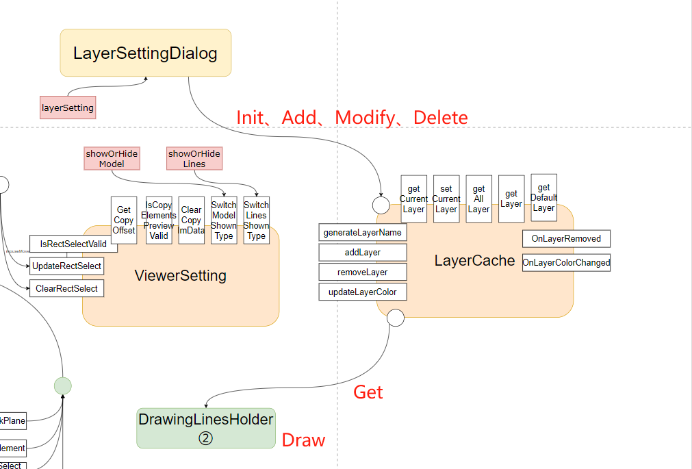
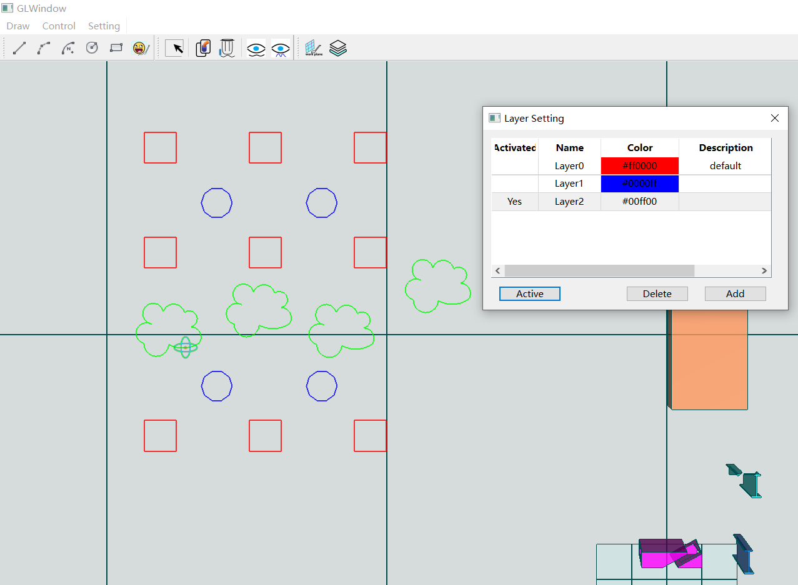

24.图层管理
三维软件中的图层管理对于提高设计效率、增强设计成果的可读性等方面具有重要意义，用户可以轻松地组织和区分不同类型的对象，从图层角度控制元素显隐以提高工作效率和体验。
接口调用逻辑比较清晰，我们来看接口调用逻辑，

GLView.layerSetting调用展示图层设置窗体LayerSettingDialog，随后对图层数据进行初始化并展示；- 在
LayerSettingDialog中可以进行图层编辑，包括图层数据的增删改，数据会同步到LayerCache中； - 当删除图层时会调用
OnLayerRemoved回调函数，对所属目标图层的线数据进行删除；同样当修改图层颜色时，会调用OnLayerColorChanged重新绘制以正确的显示线颜色； - 在每个渲染循环中，
DrawingLinesHolder会根据最新的图层数据进行线的绘制。
提示
LayerCache和ViewerSetting一样是状态更新类功能的模块，LayerCache存储图层数据并对外提供增删改查接口。
有了上述知识去详细的探究代码将会容易的多，带着好奇心去探究吧~
如果一切正常，或者遇到的问题被排查解决，记得运行和使用图层设置功能，之后绘制线数据，效果将和下图类似，有问题或疑问请查看工程代码或联系我。
